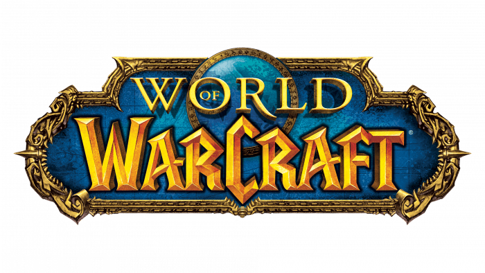
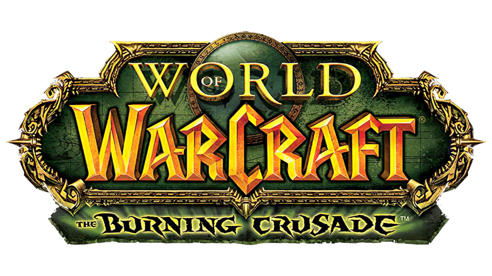
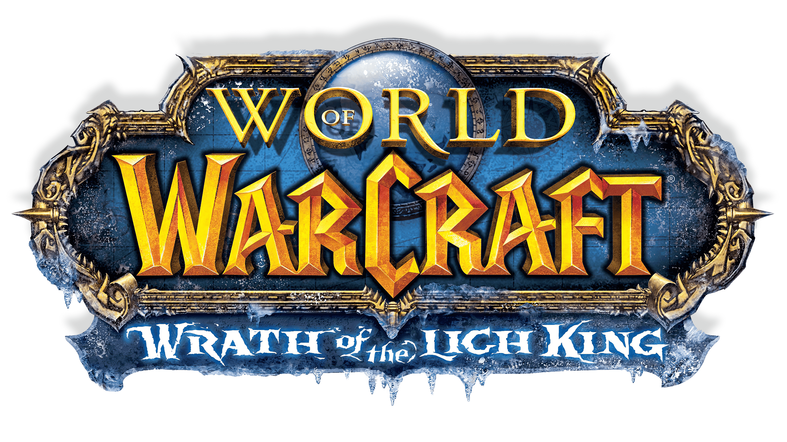
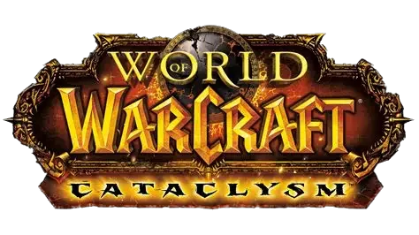
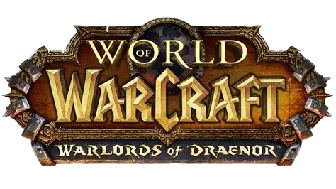
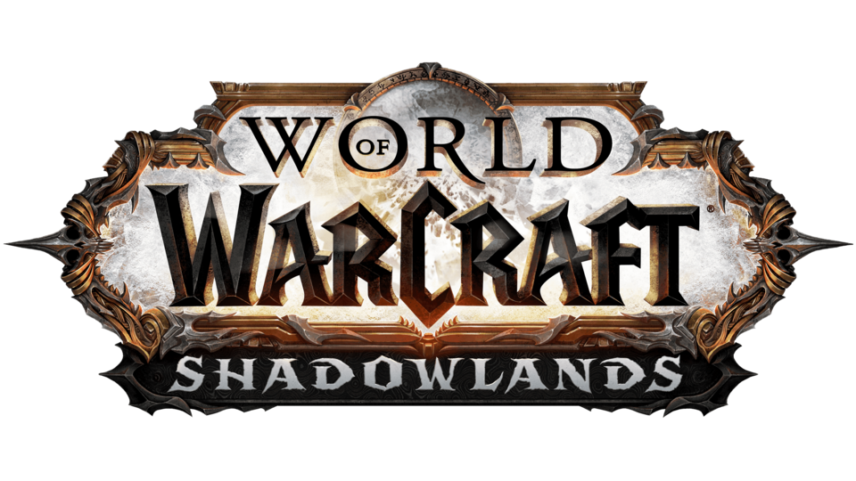
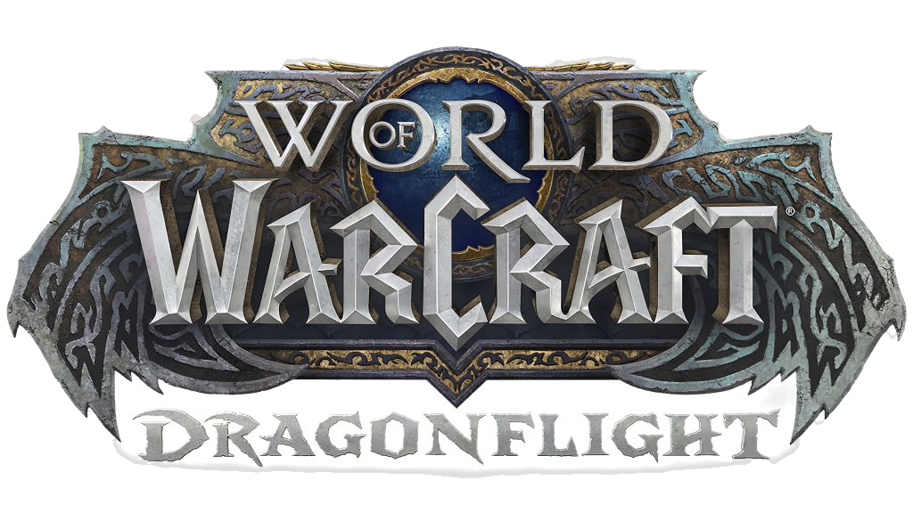
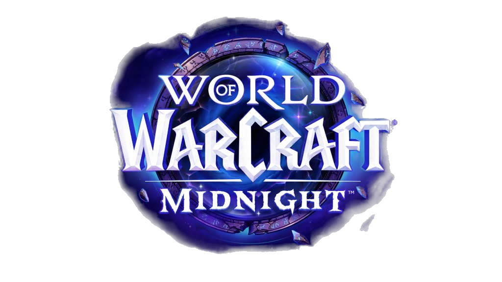
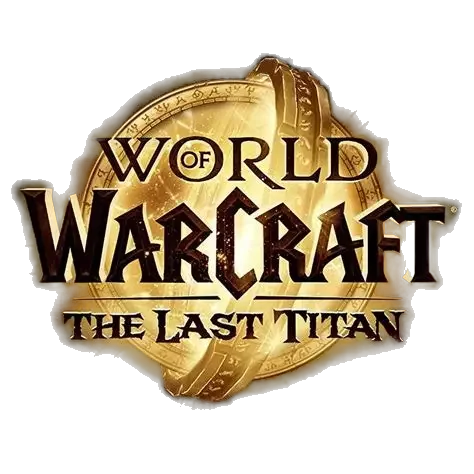

Classic (2004)
El inicio de todo. El juego que sentó las bases y cambió los MMORPG para siempre.
The Burning Crusade (2007)
Cruzamos el Portal Oscuro hacia Terrallende. Introducción de Draenei y Elfos de Sangre.
Wrath of the Lich King (2008)
Viaje a Rasganorte para derrotar a Arthas. Nace la clase Caballero de la Muerte.
Cataclysm (2010)
Alamuerte destruye el mundo antiguo. Worgen y Goblins se unen a la batalla.
Mists of Pandaria (2012)

Descubrimiento del continente brumoso. Nueva clase: el Monje.
Warlords of Draenor (2014)
Un viaje al pasado para evitar la formación de la Horda de Hierro.
Legion (2016)

El mayor ataque de la Legión Ardiente. Introducción del Cazador de Demonios.
Battle for Azeroth (2018)

Guerra total entre facciones y la introducción de las Razas Aliadas.
Shadowlands (2020)
El cielo se rompe y viajamos al reino de la muerte, las Tierras Sombrías.
Dragonflight (2022)
El despertar de las Islas Dragón y la raza/clase Evocador Dracthyr.
The War Within (2024)

Primera parte. Desciende a las profundidades de Khaz Algar para enfrentar sombras antiguas.
Midnight (Próximamente)
Regreso a Quel'Thalas. Las fuerzas del Vacío invaden Azeroth buscando apagar la Luz.
The Last Titan (Próximamente)
Regreso a Rasganorte. Los Titanes vuelven y un gran secreto será revelado.